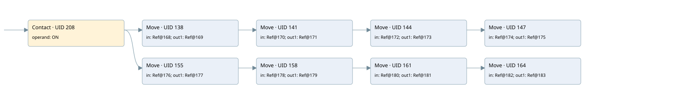

reset all flag start motors
startup only · 검색 색인 순서 2 · 원본 내부 NID 추정 2
백업 PLF 원본의 2635203 바이트 위치에서 복원한 XML. 검색 문서 402의 객체 키 16102200630f000000000000와 연결했다. 이름 해석 1/17개. 남은 RefId는 상수 또는 미해석 참조다.
연결 구조 다시 그리기
원본 Part/PCon/Wire를 이용한 연결도다. TIA 화면의 래더 배치 또는 실행 결과를 재현한 그림은 아니다. 핀 연결은 아래 표와 원본 XML을 기준으로 읽는다. 노드 위에 마우스를 두면 피연산자 이름을 볼 수 있다.

접점·코일·블록과 피연산자
| Part UID | Gate | Negated 핀 | 연결 피연산자 |
|---|---|---|---|
| 208 | Contact | operand = ON | |
| 138 | Move | in = RefId 54 / ORef UID 168; out1 = RefId 7 / ORef UID 169 | |
| 141 | Move | in = RefId 54 / ORef UID 170; out1 = RefId 9 / ORef UID 171 | |
| 144 | Move | in = RefId 54 / ORef UID 172; out1 = RefId 11 / ORef UID 173 | |
| 147 | Move | in = RefId 54 / ORef UID 174; out1 = RefId 13 / ORef UID 175 | |
| 155 | Move | in = RefId 54 / ORef UID 176; out1 = RefId 15 / ORef UID 177 | |
| 158 | Move | in = RefId 54 / ORef UID 178; out1 = RefId 17 / ORef UID 179 | |
| 161 | Move | in = RefId 54 / ORef UID 180; out1 = RefId 19 / ORef UID 181 | |
| 164 | Move | in = RefId 54 / ORef UID 182; out1 = RefId 21 / ORef UID 183 |
접점 경로를 펼친 조건식
Contact·O/A·비교기의 원본 연결을 읽기 쉽게 펼친 보조 해석이다. POWER는 전원 레일 시작을 뜻한다. 호출 블록·에지·타이머의 내부 동작과 다중 쓰기 순서는 이 표로 실행 검증하지 않았다. 미해석 핀과 RefId는 원문 연결표에서 확인한다.
| UID | 동작 | 대상 | 원본 접점 경로 | 내용 |
|---|---|---|---|---|
| 138 | Move | ORef UID 169 | ON | Move 입력 ORef UID 168 |
| 141 | Move | ORef UID 171 | Move UID 138.eno (블록 동작 확인) | Move 입력 ORef UID 170 |
| 144 | Move | ORef UID 173 | Move UID 141.eno (블록 동작 확인) | Move 입력 ORef UID 172 |
| 147 | Move | ORef UID 175 | Move UID 144.eno (블록 동작 확인) | Move 입력 ORef UID 174 |
| 155 | Move | ORef UID 177 | ON | Move 입력 ORef UID 176 |
| 158 | Move | ORef UID 179 | Move UID 155.eno (블록 동작 확인) | Move 입력 ORef UID 178 |
| 161 | Move | ORef UID 181 | Move UID 158.eno (블록 동작 확인) | Move 입력 ORef UID 180 |
| 164 | Move | ORef UID 183 | Move UID 161.eno (블록 동작 확인) | Move 입력 ORef UID 182 |
원본 배선 연결
| Wire UID | 동일 Wire 연결 끝점 |
|---|---|
| 184 | ORef 167 (ON) ↔ Part 208.operand |
| 185 | ORef 168 (RefId 54) ↔ Part 138.in |
| 186 | Part 138.out1 ↔ ORef 169 (RefId 7) |
| 187 | Part 138.eno ↔ Part 141.en |
| 188 | ORef 170 (RefId 54) ↔ Part 141.in |
| 189 | Part 141.out1 ↔ ORef 171 (RefId 9) |
| 190 | Part 141.eno ↔ Part 144.en |
| 191 | ORef 172 (RefId 54) ↔ Part 144.in |
| 192 | Part 144.out1 ↔ ORef 173 (RefId 11) |
| 193 | Part 144.eno ↔ Part 147.en |
| 194 | ORef 174 (RefId 54) ↔ Part 147.in |
| 195 | Part 147.out1 ↔ ORef 175 (RefId 13) |
| 196 | ORef 176 (RefId 54) ↔ Part 155.in |
| 197 | Part 155.out1 ↔ ORef 177 (RefId 15) |
| 198 | Part 155.eno ↔ Part 158.en |
| 199 | ORef 178 (RefId 54) ↔ Part 158.in |
| 200 | Part 158.out1 ↔ ORef 179 (RefId 17) |
| 201 | Part 158.eno ↔ Part 161.en |
| 202 | ORef 180 (RefId 54) ↔ Part 161.in |
| 203 | Part 161.out1 ↔ ORef 181 (RefId 19) |
| 204 | Part 161.eno ↔ Part 164.en |
| 205 | ORef 182 (RefId 54) ↔ Part 164.in |
| 206 | Part 164.out1 ↔ ORef 183 (RefId 21) |
| 209 | Part 208.out ↔ Part 138.en ↔ Part 155.en |
| 210 | Powerrail {} ↔ Part 208.in |
식별자 해석 근거 17개
| ORef UID | RefId | 이름 | IdentXmlPart 파일 | 해석 방법 |
|---|---|---|---|---|
| 167 | 1 | ON | 0047-IdentXmlPart.xml | UID/RID + search-text + NID agreement |
| 168 | 54 | 미해석 RefId | 식별 선언 원본 참조 | 미해석 |
| 169 | 7 | 미해석 RefId | 식별 선언 원본 참조 | 미해석 |
| 170 | 54 | 미해석 RefId | 식별 선언 원본 참조 | 미해석 |
| 171 | 9 | 미해석 RefId | 식별 선언 원본 참조 | 미해석 |
| 172 | 54 | 미해석 RefId | 식별 선언 원본 참조 | 미해석 |
| 173 | 11 | 미해석 RefId | 식별 선언 원본 참조 | 미해석 |
| 174 | 54 | 미해석 RefId | 식별 선언 원본 참조 | 미해석 |
| 175 | 13 | 미해석 RefId | 식별 선언 원본 참조 | 미해석 |
| 176 | 54 | 미해석 RefId | 식별 선언 원본 참조 | 미해석 |
| 177 | 15 | 미해석 RefId | 식별 선언 원본 참조 | 미해석 |
| 178 | 54 | 미해석 RefId | 식별 선언 원본 참조 | 미해석 |
| 179 | 17 | 미해석 RefId | 식별 선언 원본 참조 | 미해석 |
| 180 | 54 | 미해석 RefId | 식별 선언 원본 참조 | 미해석 |
| 181 | 19 | 미해석 RefId | 식별 선언 원본 참조 | 미해석 |
| 182 | 54 | 미해석 RefId | 식별 선언 원본 참조 | 미해석 |
| 183 | 21 | 미해석 RefId | 식별 선언 원본 참조 | 미해석 |
검색 코드 보조 자료
참조 명칭을 찾기 위한 자료이며 실행 순서나 AND/OR 관계는 위 연결표로 확인한다.
"on" move int#0 move int#0 move int#0 move int#0 move int#0 move int#0 move int#0 move int#0 %db2.dbw8 %db2.dbw10 %db2.dbw12 %db2.dbw14 %db2.dbw0 %db2.dbw2 %db2.dbw4 %db2.dbw6